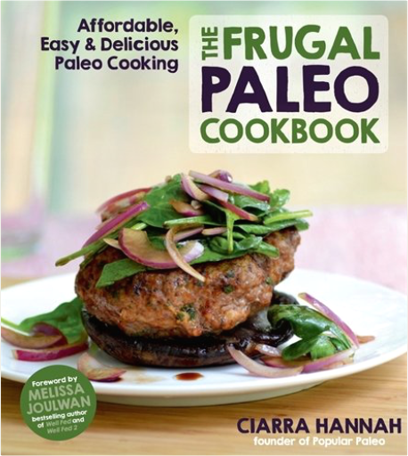

The Complete Paleo Slow Cooker: A Paleo Cookbook for Everyday Meals That Prep Fast & Cook SlowKaren Frazier The Complete Paleo Slow Cooker: A Paleo Cookbook for Everyday Meals That Prep Fast & Cook SlowKaren Frazier Taste all of the benefits of Paleo in half the time with The Complete Paleo Slow Cooker cookbook.
Favored by home chefs for years, the slow cooker remains a kitchen staple in many homes today―with good reason! Flexible timing, easy clean-up, and bulk-cooking capabilities offer practical solutions to everyday culinary conundrums. Combine these benefits with the healthy principles of a Paleo diet and tasty recipes designed by a top cookbook author, and you have The Complete Paleo Slow Cooker. The Paleo slow cooker recipes in this book offer fresh, creative Paleo slow cooker meals that retain the tenderness and richness of your ingredients―all while yielding leftovers for days to come!
The Complete Paleo Slow Cooker contains: Over 150 Recipes serving Paleo-friendly meals for breakfast, lunch, and dinnerQuick Prep requiring less than 20 minutes of active prep timeEasy-to-Find Ingredients using pantry and grocery store staplesAn Overview explaining the benefits of cooking for your Paleo diet with a slow cooker
Recipes in The Complete Paleo Slow Cooker include: Butternut Squash Porridge, Roasted Garlic Cauliflower Mash, Artichoke and Swiss Chard Ragout, Duck with Fig Sauce, Ginger-Poached Cod, Pulled Pork, Lamb Osso Bucco, Hungarian Goulash, Blueberry-Coconut Cake, and much more!
Find fast fixes to everyday Paleo meals with The Complete Paleo Slow Cooker cookbook.  Welcome: A Unitarian Universalist PrimerPatricia Frevert Welcome: A Unitarian Universalist PrimerPatricia Frevert Features common Unitarian Universalist prayers and readings, including the seven Principles and six Sources, chalice lightings, quotations from UUs of yesterday and today, and a glossary. Plus introductions to UU history, religious education and social justice.  Trotsky: A Graphic BiographyRick Geary Trotsky: A Graphic BiographyRick Geary Trotsky was a hero to some, a ruthless demon to others. To Stalin, he was such a threat that he warranted murder by pickax. This polarizing figure set up a world conflict that lasted through the twentieth century, and in Trotsky: A Graphic Biography, the renowned comic artist Rick Geary uses his distinct style to depict the stark reality of the man and his times. Trotsky's life becomes a guide to the creation of the Soviet Union, the horrors of World War I, and the establishment of international communism as he, Lenin, and their fellow Bolsheviks rise from persecution and a life underground to the height of political power. Ranging from his boyhood in the Ukraine to his fallout with Stalin and his moonlight romance with Frida Kahlo, Trotsky is a stunning look at one of the twentieth century's most important thinkers and the far-reaching political trends that he launched. Dexter and Philosophy: Mind over SpatterRichard Greene, George A. Reisch, Rachel Robison What explains the huge popular following for Dexter, currently the most-watched show on cable, which sympathetically depicts a serial killer driven by a cruel compulsion to brutally slay one victim after another?
Although Dexter Morgan kills only killers, he is not a vigilante animated by a sense of justice but a charming psychopath animated by a lust to kill, ritualistically and bloodily. However his gory appetite is controlled by Harry’s Code,” which limits his victims to those who have gotten away with murder, and his job as a blood spatter expert for the Miami police department gives him the inside track on just who those legitimate targets may be.
In Dexter and Philosophy, an elite team of philosophers don their rubber gloves and put Dexter’s deeds under the microscope. Since Dexter is driven to ritual murder by his Dark Passenger,” can he be blamed for killing, especially as he only murders other murderers? Does Dexter fit the profile of the familiar fictional type of the superhero? What part does luck play in making Dexter who he is? How and why are horror and disgust turned into aesthetic pleasure for the TV viewer? How essential is Dexter’s emotional coldness to his lust for slicing people up? Are Dexter’s lies and deceptions any worse than the lies and deceptions of the non-criminals around him? Why does Dexter long to be a normal human being and why can’t he accomplish this apparently simple goal? HenchgirlKristen Gudsnuk Mary Posa hates her job. She works long hours for little pay, no insurance, and worst of all, no respect. Her co-workers are jerks and her boss doesn't appreciate her. He's also a supervillain. And her parents... well, they're the most famous superhero couple in Crepe City, along with her sister. Cursed with a conscience, Mary would give anything to be something other than a Henchgirl, but no matter what she does her plans always seem to go awry.
"There's a lot of humor in Henchgirl which is its strong suit."—Comic Bastards
"Henchgirl is not about delivering slam-bang super-hero action, but it is a perfect comic for people who are familiar with standard super-hero tropes and like seeing those turned around and examined from some new angles for comedic effect."—Comic Spectrum
"Henchgirl is lovely and endearing but funny and clever and the same time."-Girls Like Comics
"It's a terribly fun read."—io9
"Gudsnuk is a bold storyteller."—Comic Bastards  The $100 Startup: Reinvent the Way You Make a Living, Do What You Love, and Create a New FutureChris Guillebeau The $100 Startup: Reinvent the Way You Make a Living, Do What You Love, and Create a New FutureChris Guillebeau In The $100 Startup, Chris Guillebeau shows you how to lead of life of adventure, meaning and purpose – and earn a good living.
Still in his early thirties, Chris is on the verge of completing a tour of every country on earth – he’s already visited more than 175 nations – and yet he’s never held a “real job” or earned a regular paycheck. Rather, he has a special genius for turning ideas into income, and he uses what he earns both to support his life of adventure and to give back.
There are many others like Chris – those who’ve found ways to opt out of traditional employment and create the time and income to pursue what they find meaningful. Sometimes, achieving that perfect blend of passion and income doesn’t depend on shelving what you currently do. You can start small with your venture, committing little time or money, and wait to take the real plunge when you're sure it's successful.
In preparing to write this book, Chris identified 1,500 individuals who have built businesses earning $50,000 or more from a modest investment (in many cases, $100 or less), and from that group he’s chosen to focus on the 50 most intriguing case studies. In nearly all cases, people with no special skills discovered aspects of their personal passions that could be monetized, and were able to restructure their lives in ways that gave them greater freedom and fulfillment.
Here, finally, distilled into one easy-to-use guide, are the most valuable lessons from those who’ve learned how to turn what they do into a gateway to self-fulfillment. It’s all about finding the intersection between your “expertise” – even if you don’t consider it such — and what other people will pay for. You don’t need an MBA, a business plan or even employees. All you need is a product or service that springs from what you love to do anyway, people willing to pay, and a way to get paid.
Not content to talk in generalities, Chris tells you exactly how many dollars his group of unexpected entrepreneurs required to get their projects up and running; what these individuals did in the first weeks and months to generate significant cash; some of the key mistakes they made along the way, and the crucial insights that made the business stick. Among Chris’s key principles: if you’re good at one thing, you’re probably good at something else; never teach a man to fish – sell him the fish instead; and in the battle between planning and action, action wins.
In ancient times, people who were dissatisfied with their lives dreamed of finding magic lamps, buried treasure, or streets paved with gold. Today, we know that it’s up to us to change our lives. And the best part is, if we change our own life, we can help others change theirs. This remarkable book will start you on your way.  The Art of Non-Conformity: Set Your Own Rules, Live the Life You Want, and Change the WorldChris Guillebeau The Art of Non-Conformity: Set Your Own Rules, Live the Life You Want, and Change the WorldChris Guillebeau If you've ever thought, "There must be more to life than this," The Art of Non-Conformity is for you.
Based on Chris Guillebeau's popular online manifesto "A Brief Guide to World Domination," The Art of Non-Conformity defies common assumptions about life and work while arming you with the tools to live differently. You'll discover how to live on your own terms by exploring creative self-employment, radical goal-setting, contrarian travel, and embracing life as a constant adventure.
Inspired and guided by Chris's own story and those of others who have pursued unconventional lives, you can devise your own plan for world domination-and make the world a better place at the same time. The Frugal Paleo Cookbook: Affordable, Easy & Delicious Paleo CookingCiarra Hannah SAVE MONEY & STAY GLUTEN-FREE WITH THESE EASY, DELICIOUS PALEO RECIPES
For those on the Paleo diet, one of the biggest concerns isn't the variety but the price. Luckily, Ciarra Hannah, creator of PopularPaleo.com, has 100 easy, wallet-friendly Paleo recipes that'll feed the whole family.
Ciarra uses flavorful but less expensive cuts of meat in traditional yet approachable cooking methods, as well as her roll-forward technique for creating multiple dishes to maximize your time in the kitchen. You'll love her keys to budgeting, tips for making items ahead of time, 5-ingredients-or-less seasoning blends and other money-saving pointers.
Ciarra offers an incredible and practical selection of Paleo dishes for everyday eating including Tequila Carnitas, Stupid Easy Asian Beef, Chicken & Chorizo Stew, Cuban Tilapia in Mojo and?Tater Tot Casserole with Sweet Potato Tater Tots! So, if you're loving the Paleo diet but hating the amount of money you spend each month, this book is a must-have. Save your money, enjoy tasty grain-free meals and be healthy! The New Erotic Photography Vol. 1Dian Hanson, Eric Kroll You can't spell TASCHEN without T & A!The world's finest contemporary erotic photographers Imagine walking into a room filled with the world’s finest contemporary erotic photographers, each with a portfolio of his or her best work. As you browse the photographs they discuss inspiration, censorship, how to find models, and how to make a living capturing beautiful women on film and in pixels.
The New Erotic Photography is the room, and dozens of photographers from various countries are the hosts of this intimate gathering. In this 320 page volume you will meet Ralph Gibson, Jan Saudek, Terry Richardson, Natacha Merritt, Petter Hegre, Richard Kern, and the many fresh new talents currently redefining eroticism. Playful, provocative and exuberantly sexy, these aren’t your granddad’s art nudes—this is The New Erotic Photography. Text in English, French, and German The Snowden Files: The Inside Story of the World's Most Wanted ManLuke Harding Now a major motion picture, directed by Oliver Stone and starring Joseph Gordon-Levitt.
Edward Snowden was a 29-year-old computer genius working for the National Security Agency when he shocked the world by exposing the near-universal mass surveillance programs of the United States government. His whistleblowing has shaken the leaders of nations worldwide, and generated a passionate public debate on the dangers of global monitoring and the threat to individual privacy.
In a tour de force of investigative journalism that reads like a spy novel, award-winning Guardian reporter Luke Harding tells Snowden’s astonishing story—from the day he left his glamorous girlfriend in Honolulu carrying a hard drive full of secrets, to the weeks of his secret-spilling in Hong Kong, to his battle for asylum and his exile in Moscow. For the first time, Harding brings together the many sources and strands of the story—touching on everything from concerns about domestic spying to the complicity of the tech sector—while also placing us in the room with Edward Snowden himself. The result is a gripping insider narrative—and a necessary and timely account of what is at stake for all of us in the new digital age. |

 A Jefferson Bible for the Twenty-first CenturyLuis Granados, Roy Speckhardt
A Jefferson Bible for the Twenty-first CenturyLuis Granados, Roy Speckhardt  Made with Delicious Library
Made with Delicious Library